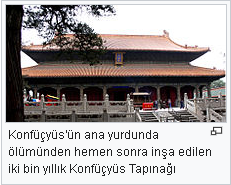

Konfüçyüs
Konfüçyüs (Çince: 孔夫子; pinyin: Kǒng Fūzǐ, yani "Üstad Kong"; Latince: Confucius) ya da Kongzi (Çince: 孔子; pinyin: Kǒng Zǐ; Wade–Giles: K’ung-tzǔ), (d. MÖ 28 Eylül 551 - ö. MÖ 479), Çinli filozof, eğitimci ve yazar.[1]
MÖ 551 - MÖ 479 tarihleri arasında, Doğu Zhou Hanedanlığı döneminde yaşadığı sanılmaktadır.[1] Kong Qiu (Wade-Giles: K’ung Ch’iu) adı altında, Lu devletinin (günümüzde Shandong eyaleti olan) Qufu şehrinde doğmuş ve aynı şehirde ölmüştür.[1]
Çin uygarlığının en önemli temsilcilerinden biri kabul edilir. Kongzi (Konfüçyüs), Çin geleneklerini derleyip yeni kuşaklara aktarmıştır. Öğretmenliği bir uğraş haline getirmiş ve kendine özgü eğitim yöntemlerini halka yaymayı başarmış bir düşünürdür. Hala da Çin ve çevresindeki kimi ülkelerde sosyal yapışkan niteliği taşıyan hakim ahlaki değerler Kongzi tarafından ortaya konmuş değerlerdir.
Kongzi (Konfüçyüs), kendinden önceki Çin klasik metinlerinin içerdiği dao evren anlayışı ilkelerinin toplum ve devlet için uyarlanabileceğini görüşünü ortaya koymuştur. Temel görüşü erdemli insan ve uyum içinde yaşayan toplum olmuştur. Bu ideale ulaşabilmek için ise, erdemli insanı tanımlamak ve onun ortaya çıkmasına yardımcı olmak gerekiyordu. Öğretisinde öteki dünya, tanrı, ruhlar, doğaüstü varlıklar ve benzeri kavramlara ve olgular yer bulmaz. Bu bakımdan ele alındığında Grek Felsefesinde Sokrates de benzer yaklaşımlar sergilemiştir. Fikirleri, kendisi tarafından yazılı hâle getirilmemiş, çoğunluğu birer düşünür ve bilim insanı olarak yetişen öğrencileri tarafından kâğıda dökülmüştür. Kongzi (Konfüçyüs)’nin düşüncelerini ve konuşmalarını derleyen “Lun Yu” adlı kitap, öğretiler kitabı olarak kabul görmüştür.
Avrupa ve Ortadoğu kaynakları Çin'de ortaya çıkan düşünürlerin görüşlerini sıklıkla dini terimlerle anlatmışlardır. Bunun temel sebebinin Çin ile ilgili ilk araştırmaları yapanların misyoner din insanları olmaları ve çevirilerinde kendi inançlarına uygun terimleri tercih etmiş olmaları yatmaktadır. Bu yüzden uzun süre Çin öğretilerinin din gibi ele alınma yanlışına düşülmüştür. Yeni çağdaş çevirilerin artmasıyla, ne eski Çin hanedanlıklarında ne de günümüzde Çin'de yaratıcı ve hükmeden bir tanrı anlayışı veya peygamberlik kurumunun olmadığı görüşü hakim olmuştur. Çin'de ortaya çıkan Dao anlayışı, Yer ve Gök anlayışı tarım öncesi toplumlarda başlamıştır. Kongzi (Konfüçyüs) de bu gelenekten gelen bir kişi olarak görüşlerinde dayanak olarak Dao anlayışını temel almış ve kendi yorumunu katmıştır. Çin düşünürleri arasında Laozi ile birlikte insanlık tarihine katkısı olmuş en etkili şahıstır.
İsminin tarihçesi
Asıl adı Qui, soyadı Kong, lakabı ise Zhonngni’dir. Çin’de Kong-Fuzi (孔夫子, Kǒng Fū Zǐ) veya Kung-Fu-Tzu adıyla tanındı. Fuzi, “üstat, bilge, öğretmen, filozof” anlamlarına gelir. İsminin anlamı “Bilge-Filozof Kong”’dur.
Konfüçyüs isminin Batı dillerindeki karşılığı olan “Confucius”, Kong-Fuzi’nin Latince şeklidir. İsmin sonundaki “-us” parçasının kaynağı, yazıtlarının ilk başta Cizvitler tarafından Latinceye çevrilmesiyle ilgilidir. Böylece "Kǒng Fū Zǐ", "Konfüçyüs"'e dönüşmüştür.[kaynak belirtilmeli]
Kong ailesi günümüzde hâlâ çınar ailesi olmakta ve dünyanın tarihçe kanıtlanmış en eski ailelerinden biri sayılmaktadır. Kong ailesinin 75. nesil üyesi bugün Tayvan'da oturan çınar olarak yaşamaktadır.[kaynak belirtilmeli] Qufu şehrinde yaşayan diğer bir ailenin de yine Konfüçyüs soyağacına dayandığı bilinmektedir. Soyağacının çok eskiye dayanmasından ötürü, binlerce ailenin çınar ailesine bağlı olması mümkün sayılır.
Hayatı

MÖ 28 Eylül 551 tarihinde, Kuzey Çin’in şimdiki Shandong eyaletinin Lu şehrinde, Kong ailesinden Shu-Liang He’nin oğlu olarak dünyaya geldiği düşünülür. Kaynaklarda soyu ve gençliği ile ilgili çeşitli rivayetler ve anlatımlar bulunmaktadır. Bir rivayete göre fakir fakat saygın bir aristokrat aileden gelmekteydi. Babasını henüz üç yaşında iken kaybetti.
Bilge bir aileye mensup olan annesinden yazı yazmayı öğrendi. On üç yaşına geldiğinde dedesinin yanına gönderildi; altı yıl süreyle dedesinden özel eğitim alarak altı marifet (sanat-hüner) diye adlandırılan, töre (tarihî gelenek ve görenekler), müzik, ok ve yay kullanma, araba sürme, yazı yazma ve hesap yapmayı öğrendi. Altı yılın sonunda dedesi, MÖ 529 yılında ise annesi öldü. Konfüçyüs, yaşadığı beyliğin kuralları gereği üç yıl annesinin yasını tuttu.
MÖ 532–502 yılları arasında belli aralıklarla Lu derebeyliğinde çeşitli görevlerde bulundu. Başlangıçta küçük memuriyetlerde bulundu. 19 yaşında iken Song beyliği seyahati sırasında tanıştığı Jī Guān Shì (丌官氏) ile evlendi, bir yıl sonra bir oğlu dünyaya geldi. Daha sonra iki kız çocuğu olmuş, birisi çok küçükken ölmüştür.
MÖ 522’de bir okul açtı ve öğrenci yetiştirmeye başladı. Hedefi yeni görüşler ortaya koymak değil, eskilerin hikmetli sözlerini aktarmaktı. Çocukluk çağlarından itibaren önceki dönem hanedanlık tarihi, yönetim şekli, sosyal ve kültürel yaşam gibi konularda araştırma yapmış ve ideallerinde yer alan dönemi Batı Zhou Hanedanlığı olarak belirlemişti. Toplumsal düzenin yeniden sağlanması için siyasal ve sosyal anlamda reform gerçekleştirilmesi gerektiğini savunmaktaydı. Fikirlerini hayata geçirmek amacıyla, ülkedeki beyliklere mensup bir yöneticinin yanında görev almayı arzu etmektedir
Kaynakça
- Tam adı: Konfüçyüs
- Doğumu: MÖ 28 Eylül 551
Lu devleti, Çin
- Ölümü: MÖ 479
Lu devleti, Çin
- Çağı: Antik Çağ felsefesi